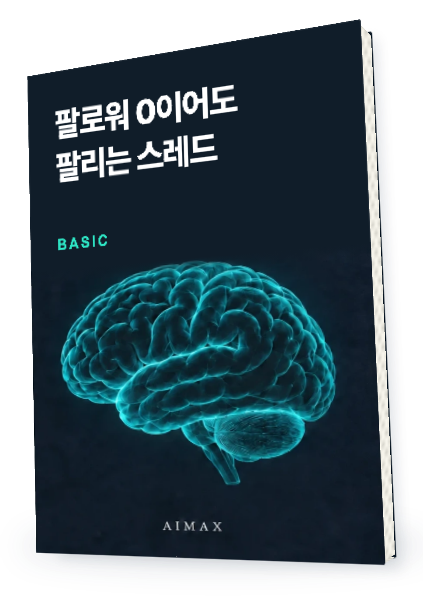

매달 어디로 돈이 나가는지
잘 모르겠다면.
이번 달 고정비부터
한 줄씩 적어 보세요.
내가 파는 것과
고객의 고민을 한 줄로

책을 읽고 내 작업에 적용하는 가이드
내 상품과 고객을 먼저 적고
소개할 소재와 첫 문장을 고릅니다.
한 번에 빽빽하게 쓰기보다
원문의 자취 고정비 소재를 바탕으로 재구성한 글 예시
짧게 쓰는 것 자체보다
독자가 한눈에 따라갈 수 있는지 봅니다.
이번 주 쓴 소재
고객이 남긴 질문
다음 글에서 보완할 점
어떤 질문이 돌아왔는지 적어 두면
다음 글의 재료가 됩니다.
팔로워 0이어도 팔리는 스레드 · BASIC
라운지에 로그인하면 무료로 읽을 수 있습니다.
유료 PREMIUM과 구성은 다릅니다.
처음 쓰는 사람도 볼 수 있나요?
PREMIUM과 무엇이 다른가요?
원리와 글 예시는 내 상품의 실제 사실에 맞게 바꿔 써 주세요. 노출·팔로워·판매 성과를 보장하지 않습니다. 화면 속 글은 설명을 위해 재구성한 예시이며 실제 게시물 성과가 아닙니다.